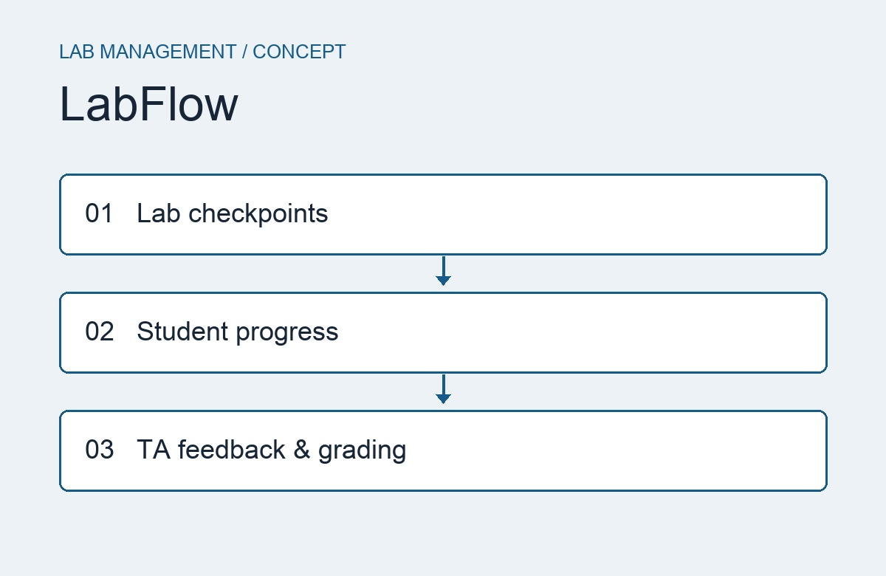

COMS 3090 · ANDROID + SPRING BOOT
LabFlow
A lab management and feedback platform designed to bring lab instructions, progress tracking, deadlines, and resources into one place.
The project proposes guided checkpoints for students and tools for teaching assistants to review submissions, provide feedback, and manage grades. Its planned stack includes an Android app in Java, a Spring Boot backend, and MySQL.